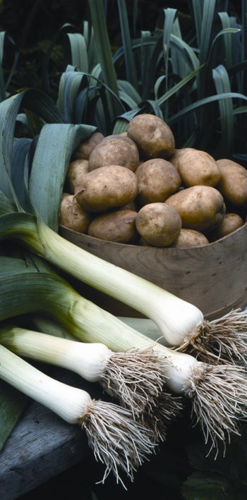
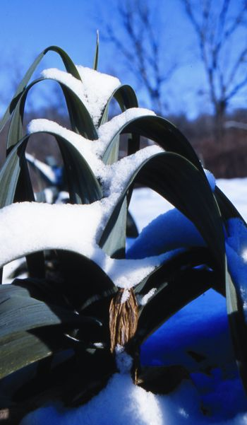
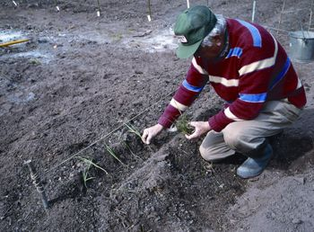
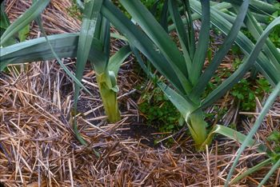
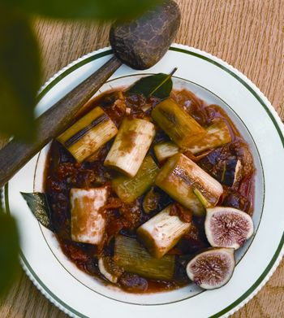
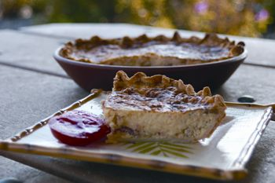

Long Live Leeks
Flavorful, versatile and extra-cold-hardy, this delicious vegetable belongs in every garden.
By Vicki Mattern
December 2006/January 2007
A growing number of American cooks and gardeners are discovering that they love leeks (Allium porrum). Though the leek was prized by Egyptian pharaohs, Roman emperors and European kings, it seems its sweet, subtle flavor has been upstaged in recent years by onions and garlic, its more assertive cousins. Big in size and deliciously mild in flavor, leeks are wonderfully versatile in the kitchen. You can use them cooked or uncooked; in soups, stews, casseroles and salads; or prepared simply on their own for an easy and satisfying winter dish. What’s more, leeks are one of the most durable vegetables you can grow. By selecting the right varieties, you can enjoy this tasty, nutritious crop year-round - including the dead of winter - making it a must for both home and market gardens.
Leek Longevity
You’ll find several leek varieties in seed catalogs, usually grouped by harvest time: summer, fall and winter. Most leeks can be harvested over a long period of time; in fact, the most cold-hardy varieties will maintain their good quality for months in the ground. “That’s the beauty of cold-hardy crops,” says John Navazio, director of education and research for the Organic Seed Alliance in Port Townsend, Wash. “Even though growth slows from around mid-October until early March, you can still harvest them at any time.” (Leek plants are biologically programmed to survive the winter months so they can flower and produce seed the second year.) Depending on snow cover and how far north you live, you’ll need to add enough leaves or straw to keep the ground from freezing so you can continue to harvest your leeks during the cold months. (Plastic bags of leaves work great, and are easy to remove when it’s time to dig.)
The most cold-hardy leeks - and best candidates for winter and spring harvest - usually are the ones with the longest “days to maturity.” Other clues to cold hardiness include leaf color and length of “stem” (the tender, white portion). As a rule of thumb, leeks with blue leaves and short, thick stems survive winter better than those with green leaves and tall, slender stems.
Organic market grower Sean Albiston of Blue Roof Organics in Stillwater, Minn., extends his harvest by growing ‘Varna,’ a tall and slender leek, for late summer to fall harvests and ‘American Flag’ and ‘Blue Solaise,’ two venerable heirlooms, for winter to spring harvests. All three varieties perform well in his cold Minnesota garden.
‘King Richard’ and ‘Giant Musselburgh’ also make an excellent combination for extended harvest, Navazio says. “‘King Richard’ is a good summer and fall leek - it’s nice and uniform but not very cold hardy. ‘Giant Musselburgh,’ which is shorter, is quite cold hardy. Even down to 15 degrees, most of the crop survives, so you can harvest it in January and February.”
‘Giant Musselburgh’ and ‘Blue Solaise’ also have proven winter hardy in the southeastern Pennsylvania garden of Mother Earth News contributing editor William Woys Weaver. A leek connoisseur, Weaver notes in his book Heirloom Vegetable Gardening that ‘Musselburgh’ “stands on its own … the tough reliability of this one takes it past a long list of leeks with much fancier names.”
Seed Starting Secrets
Plan now to order your leek seeds as early as possible. (You probably won’t find leek transplants at garden centers.) Most gardeners start leeks indoors in January or February, then transplant to the garden in early spring. A second crop of cold-hardy winter leeks can be started in March, then transplanted by early summer.
For best results, sow the seeds in individual cells, plugs or soil blocks, filled with a loose, well-aerated seed-starting mix. Albiston makes his mix using equal parts compost and peat mixed with a little bit of greensand, rock phosphate, dolomitic lime and sea kelp to supply micronutrients.
Like other seedlings started indoors, leeks want all the light you can give them. A bright windowsill, greenhouse or cold frame can provide the right light, but a pair of fluorescent bulbs also will do, if you keep them no further than an inch or two above the seedlings.
About 8 to 10 weeks after you sow the seeds, the little leeks should be just big enough to transplant to their garden home. Before you settle them in the garden, though, “harden them off” in a shady outdoor spot for a week or two, until the plants have acclimated to the brighter, windier conditions.
Growing Strong
To avoid damage by diseases and insect pests that linger in soil, choose a planting site where onions, garlic or other alliums have not grown for several years. A raised bed amended with plenty of organic matter will help provide the loose, rich soil that leeks love.
Weaver has built up the soil in his leek beds over many years, using “lots of sand and aged horse manure.” He says, “It’s important to have leek beds that hold the moisture during hot weather, but which also drain well in the winter. You don’t want standing water, which will form ice in winter. Ice can kill the leeks at the crown.”
Plant the seedlings about 6 inches apart in the prepared bed. For winter harvest in extremely cold climates, you can plant the seedlings directly in a hoop house.
In order to harvest leeks with tender, white shanks (the portion below the leaves), it is worth going to the trouble to blanch them in the garden. Blanching is the practice of deliberately blocking light from the green parts so they will become white and tender. Traditionally, leek growers do this by gradually hilling up soil around the growing stems. Jeff Cantara, who grows 1,500 leeks annually at his New Roots Farm in Newmarket, N.H., suggests a better way: Plant the seedlings in a furrow, then gradually fill in the soil as the leeks grow.
“This works better than hilling up because it keeps the roots moist,” Cantara says. “I don’t need to irrigate at all.” Before transplanting, he digs a 5- to 6-inch-deep furrow, then dusts the bottom lightly with an organic fertilizer. “We rely primarily on compost and cover crops, but a little supplemental fertilizer goes a long way with leeks,” he explains. “By putting the fertilizer in the bottom of the furrow, it goes to the leeks’ root zone - not to the weeds.” The leek seedlings are anchored in place inside the furrow with a small amount of soil, and more soil is added gradually over the following weeks.
After the furrow is completely filled with soil, mulch the bed with a layer of straw or shredded leaves to help retain moisture, impede weed growth and blanch more of the stems. Weed control is essential because leeks don’t like to compete for water and nutrients. An occasional feeding of fish emulsion fertilizer also will keep your leeks growing strong.
Pests and diseases are not a big problem with leeks, especially if you rotate beds. Occasionally, onion maggots will kill some seedlings or yellow the leaves of larger plants. Just pull out the affected plants as soon as you see them. Onion thrips, a minute winged insect, also can stunt growth and damage leaves: dust diatomaceous earth (available at garden centers) on the leeks to help control this pest.
Harvest Time
Leeks are easygoing when it comes time to harvest. You can pretty much dig them as needed, starting in August for the summer and fall varieties. Even small, immature leeks make tasty additions to salads, soups and stir-fries. Dig only the amount you plan to use because leeks store best right in the ground. Leek roots can be extensive, so use a hand fork to unearth them gently.
For winter harvest, cover your leeks with dry leaves or a plastic tunnel just before the first hard freeze. This will help extend the harvest even for varieties that aren’t winter-hardy, such as ‘King Richard.’ “We harvest most of our crop in fall but always leave at least some of the plants in the ground for winter harvest,” Cantara says. “Even if the plants don’t look good above ground, there’s still 6 to 7 inches of stalks below ground that are great for winter soups.”
The most cold-hardy varieties, including ‘Giant Musselburgh,’ ‘American Flag’ and ‘Blue Solaise,’ will hang on through winter in most regions, then resume growing in March when temperatures warm. Keep a close eye on the plants in the spring; you want to harvest before they flower and produce seed - usually by the end of April - when they will turn woody. From January into April, however, these long-lived leeks are at their best, displaying the genetic hardiness that gardeners and cooks have appreciated for millennia. In fact, if you try this sturdy vegetable, you’ll discover it is not only the last crop standing, but also the first to mature in each new season.
Leeks for All Seasons
Summer Leeks
‘King Richard,’ ‘Lincoln,’ ‘Rikor,’ ‘Kalima,’ ‘Titan’
Fall/Early Winter Leeks
‘Varna,’ ‘Imperial,’ ‘Tadorna,’ ‘Falltime’
Winter-hardy Leeks
‘American Flag,’ ‘Blue Solaise,’ ‘Giant Musselburgh,’ ‘Siegfried,’ ‘Winter Giant’
Seed Sources
The Cook’s Garden
Warminster, Pa.
(800) 457-9703
Fedco Seeds
Waterville, Maine
(207) 873-7333
High Mowing Seeds
Wolcott, Vt.
(802) 472-6174
Johnny’s Selected Seeds
Winslow, Maine
(877) 564-6697
Seeds of Change
Henderson, Nev.
(888) 762-7333
Territorial Seeds
Cottage Grove, Ore.
(800) 626-0866
Leeks in the Kitchen
The subtle, savory-sweet flavor of leeks is an excellent complement to other vegetables in soups, stews, salads and stir-fries. Classic combinations include leeks with potatoes (as in the chilled soup vichyssoise or in potato-leek salad) and leeks with kale. The traditional Scottish soup cock-a-leekie includes leeks, chicken, herbs and sometimes prunes. Leeks also are delicious sautéed gently in butter, poached and topped with a light cream sauce or wrapped in foil and roasted in the oven or on the grill.
When preparing leeks, be sure to rinse away any excess soil or sand and trim off the thinnest part of the top leafy green portion. Slice the tender stem vertically or horizontally and use raw or cooked.
Quiche with Leeks
4 large eggs
½ cup half-and-half
1 cup cream
½ pound Gruyere or Swiss cheese, grated
¼ tsp salt
4 slices bacon (optional)
¼ cup butter
2 large leeks, thinly sliced (about 2 cups)
½ tsp marjoram
1 tsp fresh parsley, chopped
1 9-inch unbaked pastry shell
Beat eggs with cream and half-and-half. Stir in cheese and salt, then set aside. If using bacon, fry until crisp, then crumble and set aside. Drain grease, then melt butter in the same skillet. Add leeks and sauté until golden brown. Remove from heat and add marjoram, parsley and bacon. Combine with egg mixture and pour into pastry shell. Bake at 400 degrees for about 40 minutes, or until a knife inserted in the center comes out clean. Serves 6.
- Heidi Hunt
Leeks Stewed in Wine with Figs
This is a traditional recipe from Cyprus, where several types of leeks native to the island are used.
1 cup dry figs, coarsely chopped
2 cups ripe tomatoes, chopped
6 fresh bay leaves
2 tbsp virgin olive oil
1 tbsp garlic, minced
1 pound leeks, cut into 1-inch pieces
½ cup dry white wine
salt and pepper to taste
Pour 1 cup boiling water over figs. Soak until soft (about 25 minutes). After the figs have softened, pour the figs and their water into a small saucepan. Add tomatoes and bay leaves. Cover and stew until the tomatoes are falling apart (about 20 minutes). Remove from heat and set aside.
Heat oil in a broad skillet or sauté pan. Add garlic and leeks. Cover and sauté 3 minutes, then uncover and add wine and tomato-fig mixture. Continue cooking over medium heat until liquid is reduced to a thick sauce (about 20 minutes). Season with salt and pepper, and serve hot or at room temperature. Serves 6 to 8.
- From the forthcoming book The Wines of Cyprus by William Woys Weaver and Ilya Loysha (Moufflon Publications)
Pennsylvania garden writer Vicki Mattern has been growing food and flowers organically for more than 20 years. She looks forward to springing her biggest leeks yet this December.
|
 WALTER CHANDOHA Leeks are delicious, nutritious and super-cold-hardy. |
 WALTER CHANDOHA Leeks are one of the few vegetables you can enjoy year-round. These sturdy ‘American Flag’ leeks look great in the garden, no matter what season it is. |
 DAVID CAVAGNARO There are enough varieties of leeks that you can grow them in most kinds of weather. In winter, try ‘American Flag,’ ‘Blue Solaise,’ ‘Giant Musselburgh,’ ‘Siegfried,’ and ‘Winter Giant.’ |
|
 WALTER CHANDOHA Transplant leek seedlings by early summer. |
 JERRY PAVIA Mulching leeks helps keep the edible parts white, sweet and tender. |
 ROB CARDILLO Leeks Stewed in Wine with Figs. See "Leeks in the Kitchen" for recipe. |
|
 MATTHEW T. STALLBAUMER Quiche with Leeks. See "Leeks in the Kitchen" for recipe. |
|
|